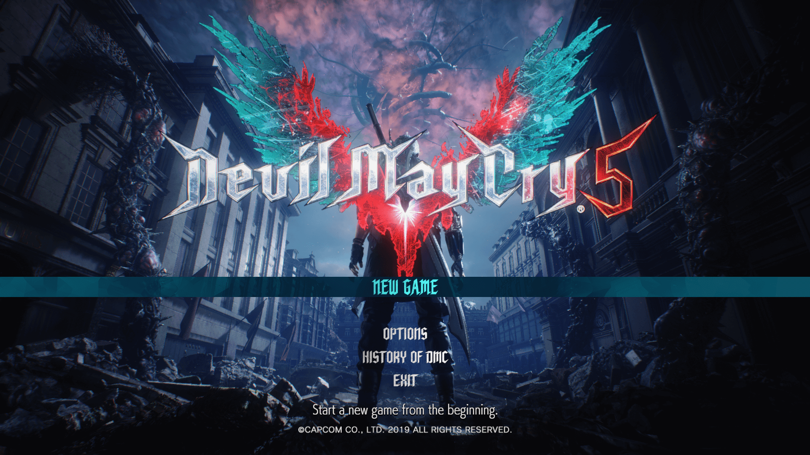
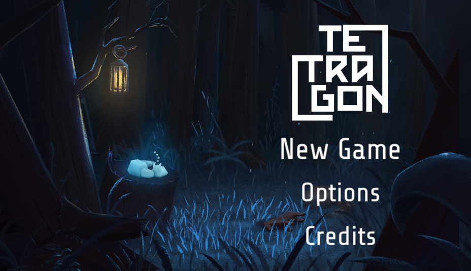
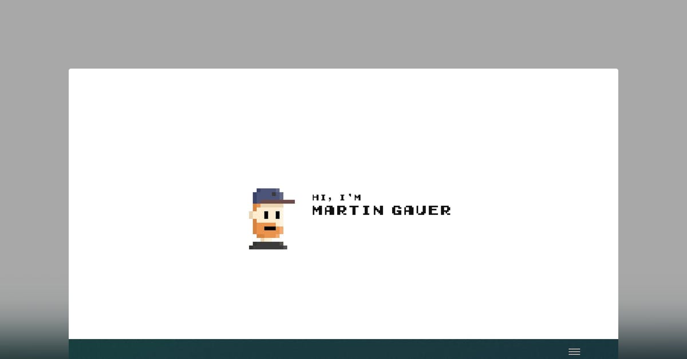

IxD Documentation
GOAL ALIIGNMENT:
For my internet art project, I wanted to centre my theme around a game: The genre being an adventure game.
In this project, I wanted to create a website centred around creating a game experience. Instead of just making my internet art game-like, it seemed like a good idea to make the entire website fell like you're playing a game.
Inspiration for my work was taken from Martin Gauer's portfolio website:
https://martingauer.com/
He provides us with an interactive experience which feels like we're playing a game.
The use of an interactive Gameboy in which we can play taking us through his career journey is brilliant and fun to engage with
QUESTIONS THAT GOT ME THINKING:
Why the genre 'adventure'?
How will my experience be different to that of Martin Gauer's portfolio website?
How can I create a unique experience without making the user feel overwhelmed and confused?
What aesthetic of an adventure game do you want to use: bright and colourful, dull medieval or maybe even try and mix both to create a new experience?
What do you want the user to see first? how do you want your starting point to look like
CONTENT MAPPING & USER FLOW
CONTENT MAPPING:
For the content mapping I played around with different way in which I want the content of the website to be explore. This is when visuals came into play. Before you read something you see it first right?
so I started to think: "how can I reveal content in a creative and fun way that also sticks to my overall theme?
Answer: TREASURE HUNT!
Why not make clickable icons teasure chests then once the user clicks on it it reveals content? Also this can be displayes in a creative way that alows the user to also choose how they want to navigate the website.
USER FLOW:
I wanted the website to have a very similar user flow to a game. So it functions the same as a game. From the start page, navigation, how new content or information is revealed to the user.
From the moment the website link is clicked the user will be welcomed by a 'start screen' almost like in a game where they click the start button and they are taken to the home page where they can choose what content they would like to look at first.
The navigation behaves like a pause game system, so like a normal webiste the navigation bar at the top will have an icon in which the user can click to reveal a sidebar nav providing other links that take the user to a different page/section.
Alternatively a back button at the top of the page can also be used if the user wants to go back to the previous page they were on.
NOTES ON VISUAL AESTHETIC:
GENERAL AESTHETIC:
Adventure!!
Treasure hunt, maps ans do forth.
I want to make the user feel like they are a warrior looking for new treasures
Colours:
The colours that would match the aesthetic would be neautral colours. Colours like light brown, tan, white, black, a it of gold. Colours similar to the reference image on this page.
What I want to have:
I want to include icons of treasure chests.
I also want to make use of images of maps for the userflow of my website. for example on my design section i would place a background image of a map then place various buttons on the map in different places to create like a path.
INTERFACE ELEMENTS:
I make user of buttons, side menus for navigation, icons as well as image carousels/ image sliders.
BUTTONS:
The use of buttons allows the user to interact with the site in general, it's a given.
For my design choices it functions as deciding factor for the user, what I mean by this is it acts as a yes button for the user. If the user wants to see the style guide or is interacting with the internet art I have them click on the button that takes them to that particular place. For in a game if I choose to click explore the game will behave a certain way and process my decision taking me to where I want to go
SIDE MENUS:
The side menus behave like a pause system in a game.
if the user would like to go to a different section of the website they can click the icon which will be present at the top corner of the page. This will open a side navigation bar which will have links for the other section which the user can click taking them to the new section
IMAGE SLIDERS/CAROUSELS:
the image sliders presented on the website are present for the Styleguide, IxD documentation and the Internet Art prep and reflection.
This method was chosen because I wanted it to feel like the user was going through a treasure book/ a book of legends or something along those lines.
This treasure book reveals more content about how the website came about and why things are the way they are. I think the use of an image slider has helped me keep my adventure theme
REFERENCES:
This is the start /home screen for the game Devil May Cry 5. This is the first idea i had for my website homepage. I wanted it to have this look as it is a familiar setup/look tht alot of people who have played games know. It's very simple and presents all the possible places the user can explore.

This is the start screen for the game Tetragon- I've never played this game by the way the setup attracted me when I was doing research, lol. Anyway, this was also a nice wireframe idea I like because it's also a wireframe we see a lot in games, it may be a wireframe I've seen a lot (well the games I've played). The use of a small area of space is also nice, it allows the user to admire the aesthetic.

The image below is Martin Gauer's welcome page on his portfolio website.
- The image is actually an animation. Once the "Press here to START' and the user has not clicked on it yet the little pixel Martin Gauer blinks. It indicates that he's waiting for you to do something which i think is a cool and creative design visually.
The 'Press here to START' would show underneath the name
The user can then click the text which takes them to a new page
For the start page on my website I wanted to implement somthing like this. This for me is a creative way to introduce the website in a game like way and also it's creates a fun user expereince
